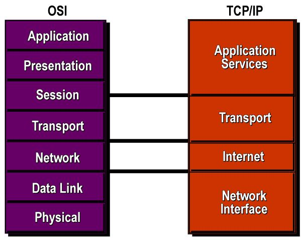

Uvod
OSI i TCP/IP referentni modeli prestavljaju standarde koji služe za ostvarivanje komunikacije među različitim računalima na različitim mrežama, povezanih direktno ili neposredno. Ti standardi definiraju način spajanja različitih računala (softverski i hardverski) na različitim mrežnim infrastrukturama tj. omogućavaju istima da komuniciraju.
Oba referentna modela su podjeljeni u slojeve koji opisuju dio procesa komunikacije među računalima. To možemo jednostavnije objasniti da zbog potrebe da komunikacija bude razumljiva, poruke moraju prolaziti kroz proces prevođenja. Proces prevođenja podjeljen je u podprocese koje nazivamo slojevima (eng. layer). Procesi ostvarivanja komunikacije zahtjevaju poštivanje određenog seta pravila tj. protokola.
Ostvarivanje komunikacije na internetu je složen proces tj. oba referentna modela ne prestavljaju potpunu, stvarnu implementaciju u realnom svijetu vec služe kao model za planiranje i gradnju stabilne, pouzdane komunikacije kakvu poznajemo danas.
